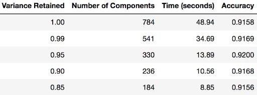

9. Principal Component Analysis
Contents
9. Principal Component Analysis¶
Up until now, we have been looking in depth at supervised learning estimators: those estimators that predict labels based on labeled training data. Here we begin looking at several unsupervised estimators, which can highlight interesting aspects of the data without reference to any known labels.
When implementing machine learning algorithms, the inclusion of more features might lead to worsening performance issues. Increasing the number of features will not always improve classification accuracy, which is also known as the curse of dimensionality. Hence, we apply dimensionality reduction to improve classification accuracy by selecting the optimal set of lower dimensionality features.
Principal component analysis (PCA) is essential for data science, machine learning, data visualization, statistics, and other quantitative fields.
There are two techniques to make dimensionality reduction:
Feature Selection
Feature Extraction
It is essential to know about vector, matrix, and transpose matrix, eigenvalues, eigenvectors, and others to understand the concept of dimensionality reduction.
Curse of Dimensionality¶
Dimensionality in a dataset becomes a severe impediment to achieve a reasonable efficiency for most algorithms. Increasing the number of features does not always improve accuracy. When data does not have enough features, the model is likely to underfit, and when data has too many features, it is likely to overfit. Hence it is called the curse of dimensionality. The curse of dimensionality is an astonishing paradox for data scientists, based on the exploding amount of n-dimensional spaces — as the number of dimensions, n, increases.
Sparseness¶
The sparseness of data is the property of being scanty or scattered. It lacks denseness, and its high percentage of the variable’s cells do not contain actual data. Fundamentally full of “empty” or “N/A” values.
Points in an n-dimensional space frequently become sparse as the number of dimensions grows. The distance between points will extend to grow as the number of dimensions increases.
Implications of the Curse of Dimensionality¶
There are few implications of the curse of dimensionality:
Optimization problems will be infeasible as the number of features increases.
Due to the absolute scale of inherent points in an n-dimensional space, as n maintains to grow, the possibility of recognizing a particular point (or even a nearby point) proceeds to fall.
Dimensionality Reduction¶
Dimensionality reduction eliminates some features of the dataset and creates a restricted set of features that contains all of the information needed to predict the target variables more efficiently and accurately.
Reducing the number of features normally also reduces the output variability and complexity of the learning process. The covariance matrix is an important step in the dimensionality reduction process. It is a critical process to check the correlation between different features.
Correlation and its Measurement¶
There is a concept of correlation in machine learning that is called multicollinearity. Multicollinearity exists when one or more independent variables highly correlate with each other. Multicollinearity makes variables highly correlated to one another, which makes the variables’ coefficients highly unstable.
The coefficient is a significant part of regression, and if this is unstable, then there will be a poor outcome of the regression result. Multicollinearity is confirmed by using Variance Inflation Factors (VIF). Therefore, if multicollinearity is suspected, it can be checked using the variance inflation factor (VIF).
\(\text{VIF}_j = \frac{1}{1 - R_j^2}\)
where \(\text{VIF}_j\) is the VIF for the predictor variable \(X_j\), and \(R_j^2\) is the coefficient of determination for the regression model where \(X_j\) is the response variable and all other predictor variables are used to predict \(X_j\). The VIF measures the extent to which the variance of the estimated coefficient for \(X_j\) is inflated due to its linear dependence on other predictor variables in the model. A high VIF indicates strong collinearity between \(X_j\) and other predictors.
Rules from VIF:
A VIF of 1 would indicate complete independence from any other variable.
A VIF between 5 and 10 indicates a very high level of collinearity [4].
The closer we get to 1, the more ideal the scenario for predictive modeling.
Each independent variable regresses against each independent variable, and we calculate the VIF.
Heatmap also plays a crucial role in understanding the correlation between variables.
The type of relationship between any two quantities varies over a period of time.
Correlation varies from -1 to +1
To be precise,
Values that are close to +1 indicate a positive correlation.
Values close to -1 indicate a negative correlation.
Values close to 0 indicate no correlation at all.
A correlation from the representation of the heatmap:
Among the first and the third features.
Between the first and the fourth features.
Between the third and the fourth features.
Independent features:
-The second feature is almost independent of the others.
Here the correlation matrix and its pictorial representation have given the idea about the potential number of features reduction. Therefore, two features can be kept, and other features can be reduced apart from those two features.
There are two ways of dimensionality reduction:
Feature Selection
Feature Extraction
Dimensionality Reduction can ignore the components of lesser significance.
Feature Extraction¶
In feature extraction, a set of new features are found. That is found through some mapping from the existing features. Moreover, mapping can be either linear or non-linear.
Linear Feature Extraction¶
Linear feature extraction is straightforward to compute and analytically traceable.
Widespread linear feature extraction methods:
Principal Component Analysis (PCA): It seeks a projection that preserves as much information as possible in the data.
Linear Discriminant Analysis (LDA):- It seeks a projection that best discriminates the data.
Principal Component Analysis (PCA)¶
Principal Component Analysis (PCA) is an exploratory approach to reduce the data set’s dimensionality to 2D or 3D, used in exploratory data analysis for making predictive models. Principal Component Analysis is a linear transformation of data set that defines a new coordinate rule such that:
The highest variance by any projection of the data set appears to laze on the first axis. The second biggest variance on the second axis, and so on. We can use principal component analysis (PCA) for the following purposes:
To reduce the number of dimensions in the dataset.
To find patterns in the high-dimensional dataset
To visualize the data of high dimensionality
To ignore noise
To improve classification
To gets a compact description
To captures as much of the original variance in the data as possible
In summary, we can define principal component analysis (PCA) as the transformation of any high number of variables into a smaller number of uncorrelated variables called principal components (PCs), developed to capture as much of the data’s variance as possible.
Math of PCA Math of PCA.
More math of PCA Math of PCA.
What is PCA¶
Principal Component Analysis (PCA) is a linear dimensionality reduction technique that can be utilized for extracting information from a high-dimensional space by projecting it into a lower-dimensional sub-space. It tries to preserve the essential parts that have more variation of the data and remove the non-essential parts with fewer variation.
Dimensions are nothing but features that represent the data. For example, A 28 X 28 image has 784 picture elements (pixels) that are the dimensions or features which together represent that image.
One important thing to note about PCA is that it is an Unsupervised dimensionality reduction technique, you can cluster the similar data points based on the feature correlation between them without any supervision (or labels)
According to Wikipedia, PCA is a statistical procedure that uses an orthogonal transformation to convert a set of observations of possibly correlated variables (entities each of which takes on various numerical values) into a set of values of linearly uncorrelated variables called principal components.
Wiki of PCA Wiki.
Why use PCA?¶
By reducing the number of features, PCA can help:
Reduce the risk of overfitting a model to noisy features.
Speed-up the training of a machine learning algorithm
Make simpler data vizualisations. When working on any data related problem, the challenge in today’s world is the sheer volume of data, and the variables/features that define that data. To solve a problem where data is the key, you need extensive data exploration like finding out how the variables are correlated or understanding the distribution of a few variables. Considering that there are a large number of variables or dimensions along which the data is distributed, visualization can be a challenge and almost impossible.Hence, PCA can do that for you since it projects the data into a lower dimension, thereby allowing you to visualize the data in a 2D or 3D space with a naked eye.
For example, the Iris dataset has 4 features… hard to plot a 4D graph.
However, we can use PCA to reduce the number of features to 3 and plot on a 3D graph.
How the PCA Machine Learning Algorithm Works?¶
PCA identifies the intrinsic dimension of a dataset.
In other words, it identifies the smallest number of features required to make an accurate prediction.
A dataset may have a lot of features, but not all features are essential to the prediction.
The features kept are the ones that have significant variance.
The linear mapping of the data to a lower-dimensional space is performed in a way that maximizes the variance of the data.
PCA assumes that features with low variance are irrelevant and features with high variance are informative.
Steps involved in PCA¶
Standardize the PCA.
Calculate the covariance matrix.
Find the eigenvalues and eigenvectors for the covariance matrix.
Plot the vectors on the scaled data.
PCA for Data Visualization¶
For a lot of machine learning applications, it helps to visualize your data. Visualizing two- or three-dimensional data is not that challenging. However, even the Iris data set used in this part of the tutorial is four-dimensional. You can use PCA to reduce that four-dimensional data into two or three dimensions so that you can plot, and hopefully, understand the data better.
STEP 1: LOAD THE IRIS DATA SET
The iris data set comes with scikit-learn and doesn’t require you to download any files from some external websites. The code below will load the Iris data set.
import pandas as pd
url = "https://archive.ics.uci.edu/ml/machine-learning-databases/iris/iris.data"
# load dataset into Pandas DataFrame
df = pd.read_csv(url, names=['sepal length','sepal width','petal length','petal width','target'])
df
D:\ProgramData\Anaconda3\lib\site-packages\pandas\compat\_optional.py:138: UserWarning: Pandas requires version '2.7.0' or newer of 'numexpr' (version '2.6.9' currently installed).
warnings.warn(msg, UserWarning)
| sepal length | sepal width | petal length | petal width | target | |
|---|---|---|---|---|---|
| 0 | 5.1 | 3.5 | 1.4 | 0.2 | Iris-setosa |
| 1 | 4.9 | 3.0 | 1.4 | 0.2 | Iris-setosa |
| 2 | 4.7 | 3.2 | 1.3 | 0.2 | Iris-setosa |
| 3 | 4.6 | 3.1 | 1.5 | 0.2 | Iris-setosa |
| 4 | 5.0 | 3.6 | 1.4 | 0.2 | Iris-setosa |
| ... | ... | ... | ... | ... | ... |
| 145 | 6.7 | 3.0 | 5.2 | 2.3 | Iris-virginica |
| 146 | 6.3 | 2.5 | 5.0 | 1.9 | Iris-virginica |
| 147 | 6.5 | 3.0 | 5.2 | 2.0 | Iris-virginica |
| 148 | 6.2 | 3.4 | 5.4 | 2.3 | Iris-virginica |
| 149 | 5.9 | 3.0 | 5.1 | 1.8 | Iris-virginica |
150 rows × 5 columns
STEP 2: STANDARDIZE THE DATA
PCA is affected by scale, so you need to scale the features in your data before applying PCA. Use StandardScaler to help you standardize the data set’s features onto unit scale (mean = 0 and variance = 1), which is a requirement for the optimal performance of many machine learning algorithms. If you don’t scale your data, it can have a negative effect on your algorithm.
from sklearn.preprocessing import StandardScaler
features = ['sepal length', 'sepal width', 'petal length', 'petal width']
# Separating out the features
x = df.loc[:, features].values
# Separating out the target
y = df.loc[:,['target']].values
x
array([[5.1, 3.5, 1.4, 0.2],
[4.9, 3. , 1.4, 0.2],
[4.7, 3.2, 1.3, 0.2],
[4.6, 3.1, 1.5, 0.2],
[5. , 3.6, 1.4, 0.2],
[5.4, 3.9, 1.7, 0.4],
[4.6, 3.4, 1.4, 0.3],
[5. , 3.4, 1.5, 0.2],
[4.4, 2.9, 1.4, 0.2],
[4.9, 3.1, 1.5, 0.1],
[5.4, 3.7, 1.5, 0.2],
[4.8, 3.4, 1.6, 0.2],
[4.8, 3. , 1.4, 0.1],
[4.3, 3. , 1.1, 0.1],
[5.8, 4. , 1.2, 0.2],
[5.7, 4.4, 1.5, 0.4],
[5.4, 3.9, 1.3, 0.4],
[5.1, 3.5, 1.4, 0.3],
[5.7, 3.8, 1.7, 0.3],
[5.1, 3.8, 1.5, 0.3],
[5.4, 3.4, 1.7, 0.2],
[5.1, 3.7, 1.5, 0.4],
[4.6, 3.6, 1. , 0.2],
[5.1, 3.3, 1.7, 0.5],
[4.8, 3.4, 1.9, 0.2],
[5. , 3. , 1.6, 0.2],
[5. , 3.4, 1.6, 0.4],
[5.2, 3.5, 1.5, 0.2],
[5.2, 3.4, 1.4, 0.2],
[4.7, 3.2, 1.6, 0.2],
[4.8, 3.1, 1.6, 0.2],
[5.4, 3.4, 1.5, 0.4],
[5.2, 4.1, 1.5, 0.1],
[5.5, 4.2, 1.4, 0.2],
[4.9, 3.1, 1.5, 0.1],
[5. , 3.2, 1.2, 0.2],
[5.5, 3.5, 1.3, 0.2],
[4.9, 3.1, 1.5, 0.1],
[4.4, 3. , 1.3, 0.2],
[5.1, 3.4, 1.5, 0.2],
[5. , 3.5, 1.3, 0.3],
[4.5, 2.3, 1.3, 0.3],
[4.4, 3.2, 1.3, 0.2],
[5. , 3.5, 1.6, 0.6],
[5.1, 3.8, 1.9, 0.4],
[4.8, 3. , 1.4, 0.3],
[5.1, 3.8, 1.6, 0.2],
[4.6, 3.2, 1.4, 0.2],
[5.3, 3.7, 1.5, 0.2],
[5. , 3.3, 1.4, 0.2],
[7. , 3.2, 4.7, 1.4],
[6.4, 3.2, 4.5, 1.5],
[6.9, 3.1, 4.9, 1.5],
[5.5, 2.3, 4. , 1.3],
[6.5, 2.8, 4.6, 1.5],
[5.7, 2.8, 4.5, 1.3],
[6.3, 3.3, 4.7, 1.6],
[4.9, 2.4, 3.3, 1. ],
[6.6, 2.9, 4.6, 1.3],
[5.2, 2.7, 3.9, 1.4],
[5. , 2. , 3.5, 1. ],
[5.9, 3. , 4.2, 1.5],
[6. , 2.2, 4. , 1. ],
[6.1, 2.9, 4.7, 1.4],
[5.6, 2.9, 3.6, 1.3],
[6.7, 3.1, 4.4, 1.4],
[5.6, 3. , 4.5, 1.5],
[5.8, 2.7, 4.1, 1. ],
[6.2, 2.2, 4.5, 1.5],
[5.6, 2.5, 3.9, 1.1],
[5.9, 3.2, 4.8, 1.8],
[6.1, 2.8, 4. , 1.3],
[6.3, 2.5, 4.9, 1.5],
[6.1, 2.8, 4.7, 1.2],
[6.4, 2.9, 4.3, 1.3],
[6.6, 3. , 4.4, 1.4],
[6.8, 2.8, 4.8, 1.4],
[6.7, 3. , 5. , 1.7],
[6. , 2.9, 4.5, 1.5],
[5.7, 2.6, 3.5, 1. ],
[5.5, 2.4, 3.8, 1.1],
[5.5, 2.4, 3.7, 1. ],
[5.8, 2.7, 3.9, 1.2],
[6. , 2.7, 5.1, 1.6],
[5.4, 3. , 4.5, 1.5],
[6. , 3.4, 4.5, 1.6],
[6.7, 3.1, 4.7, 1.5],
[6.3, 2.3, 4.4, 1.3],
[5.6, 3. , 4.1, 1.3],
[5.5, 2.5, 4. , 1.3],
[5.5, 2.6, 4.4, 1.2],
[6.1, 3. , 4.6, 1.4],
[5.8, 2.6, 4. , 1.2],
[5. , 2.3, 3.3, 1. ],
[5.6, 2.7, 4.2, 1.3],
[5.7, 3. , 4.2, 1.2],
[5.7, 2.9, 4.2, 1.3],
[6.2, 2.9, 4.3, 1.3],
[5.1, 2.5, 3. , 1.1],
[5.7, 2.8, 4.1, 1.3],
[6.3, 3.3, 6. , 2.5],
[5.8, 2.7, 5.1, 1.9],
[7.1, 3. , 5.9, 2.1],
[6.3, 2.9, 5.6, 1.8],
[6.5, 3. , 5.8, 2.2],
[7.6, 3. , 6.6, 2.1],
[4.9, 2.5, 4.5, 1.7],
[7.3, 2.9, 6.3, 1.8],
[6.7, 2.5, 5.8, 1.8],
[7.2, 3.6, 6.1, 2.5],
[6.5, 3.2, 5.1, 2. ],
[6.4, 2.7, 5.3, 1.9],
[6.8, 3. , 5.5, 2.1],
[5.7, 2.5, 5. , 2. ],
[5.8, 2.8, 5.1, 2.4],
[6.4, 3.2, 5.3, 2.3],
[6.5, 3. , 5.5, 1.8],
[7.7, 3.8, 6.7, 2.2],
[7.7, 2.6, 6.9, 2.3],
[6. , 2.2, 5. , 1.5],
[6.9, 3.2, 5.7, 2.3],
[5.6, 2.8, 4.9, 2. ],
[7.7, 2.8, 6.7, 2. ],
[6.3, 2.7, 4.9, 1.8],
[6.7, 3.3, 5.7, 2.1],
[7.2, 3.2, 6. , 1.8],
[6.2, 2.8, 4.8, 1.8],
[6.1, 3. , 4.9, 1.8],
[6.4, 2.8, 5.6, 2.1],
[7.2, 3. , 5.8, 1.6],
[7.4, 2.8, 6.1, 1.9],
[7.9, 3.8, 6.4, 2. ],
[6.4, 2.8, 5.6, 2.2],
[6.3, 2.8, 5.1, 1.5],
[6.1, 2.6, 5.6, 1.4],
[7.7, 3. , 6.1, 2.3],
[6.3, 3.4, 5.6, 2.4],
[6.4, 3.1, 5.5, 1.8],
[6. , 3. , 4.8, 1.8],
[6.9, 3.1, 5.4, 2.1],
[6.7, 3.1, 5.6, 2.4],
[6.9, 3.1, 5.1, 2.3],
[5.8, 2.7, 5.1, 1.9],
[6.8, 3.2, 5.9, 2.3],
[6.7, 3.3, 5.7, 2.5],
[6.7, 3. , 5.2, 2.3],
[6.3, 2.5, 5. , 1.9],
[6.5, 3. , 5.2, 2. ],
[6.2, 3.4, 5.4, 2.3],
[5.9, 3. , 5.1, 1.8]])
# Standardizing the features
x = StandardScaler().fit_transform(x)
x
array([[-9.00681170e-01, 1.03205722e+00, -1.34127240e+00,
-1.31297673e+00],
[-1.14301691e+00, -1.24957601e-01, -1.34127240e+00,
-1.31297673e+00],
[-1.38535265e+00, 3.37848329e-01, -1.39813811e+00,
-1.31297673e+00],
[-1.50652052e+00, 1.06445364e-01, -1.28440670e+00,
-1.31297673e+00],
[-1.02184904e+00, 1.26346019e+00, -1.34127240e+00,
-1.31297673e+00],
[-5.37177559e-01, 1.95766909e+00, -1.17067529e+00,
-1.05003079e+00],
[-1.50652052e+00, 8.00654259e-01, -1.34127240e+00,
-1.18150376e+00],
[-1.02184904e+00, 8.00654259e-01, -1.28440670e+00,
-1.31297673e+00],
[-1.74885626e+00, -3.56360566e-01, -1.34127240e+00,
-1.31297673e+00],
[-1.14301691e+00, 1.06445364e-01, -1.28440670e+00,
-1.44444970e+00],
[-5.37177559e-01, 1.49486315e+00, -1.28440670e+00,
-1.31297673e+00],
[-1.26418478e+00, 8.00654259e-01, -1.22754100e+00,
-1.31297673e+00],
[-1.26418478e+00, -1.24957601e-01, -1.34127240e+00,
-1.44444970e+00],
[-1.87002413e+00, -1.24957601e-01, -1.51186952e+00,
-1.44444970e+00],
[-5.25060772e-02, 2.18907205e+00, -1.45500381e+00,
-1.31297673e+00],
[-1.73673948e-01, 3.11468391e+00, -1.28440670e+00,
-1.05003079e+00],
[-5.37177559e-01, 1.95766909e+00, -1.39813811e+00,
-1.05003079e+00],
[-9.00681170e-01, 1.03205722e+00, -1.34127240e+00,
-1.18150376e+00],
[-1.73673948e-01, 1.72626612e+00, -1.17067529e+00,
-1.18150376e+00],
[-9.00681170e-01, 1.72626612e+00, -1.28440670e+00,
-1.18150376e+00],
[-5.37177559e-01, 8.00654259e-01, -1.17067529e+00,
-1.31297673e+00],
[-9.00681170e-01, 1.49486315e+00, -1.28440670e+00,
-1.05003079e+00],
[-1.50652052e+00, 1.26346019e+00, -1.56873522e+00,
-1.31297673e+00],
[-9.00681170e-01, 5.69251294e-01, -1.17067529e+00,
-9.18557817e-01],
[-1.26418478e+00, 8.00654259e-01, -1.05694388e+00,
-1.31297673e+00],
[-1.02184904e+00, -1.24957601e-01, -1.22754100e+00,
-1.31297673e+00],
[-1.02184904e+00, 8.00654259e-01, -1.22754100e+00,
-1.05003079e+00],
[-7.79513300e-01, 1.03205722e+00, -1.28440670e+00,
-1.31297673e+00],
[-7.79513300e-01, 8.00654259e-01, -1.34127240e+00,
-1.31297673e+00],
[-1.38535265e+00, 3.37848329e-01, -1.22754100e+00,
-1.31297673e+00],
[-1.26418478e+00, 1.06445364e-01, -1.22754100e+00,
-1.31297673e+00],
[-5.37177559e-01, 8.00654259e-01, -1.28440670e+00,
-1.05003079e+00],
[-7.79513300e-01, 2.42047502e+00, -1.28440670e+00,
-1.44444970e+00],
[-4.16009689e-01, 2.65187798e+00, -1.34127240e+00,
-1.31297673e+00],
[-1.14301691e+00, 1.06445364e-01, -1.28440670e+00,
-1.44444970e+00],
[-1.02184904e+00, 3.37848329e-01, -1.45500381e+00,
-1.31297673e+00],
[-4.16009689e-01, 1.03205722e+00, -1.39813811e+00,
-1.31297673e+00],
[-1.14301691e+00, 1.06445364e-01, -1.28440670e+00,
-1.44444970e+00],
[-1.74885626e+00, -1.24957601e-01, -1.39813811e+00,
-1.31297673e+00],
[-9.00681170e-01, 8.00654259e-01, -1.28440670e+00,
-1.31297673e+00],
[-1.02184904e+00, 1.03205722e+00, -1.39813811e+00,
-1.18150376e+00],
[-1.62768839e+00, -1.74477836e+00, -1.39813811e+00,
-1.18150376e+00],
[-1.74885626e+00, 3.37848329e-01, -1.39813811e+00,
-1.31297673e+00],
[-1.02184904e+00, 1.03205722e+00, -1.22754100e+00,
-7.87084847e-01],
[-9.00681170e-01, 1.72626612e+00, -1.05694388e+00,
-1.05003079e+00],
[-1.26418478e+00, -1.24957601e-01, -1.34127240e+00,
-1.18150376e+00],
[-9.00681170e-01, 1.72626612e+00, -1.22754100e+00,
-1.31297673e+00],
[-1.50652052e+00, 3.37848329e-01, -1.34127240e+00,
-1.31297673e+00],
[-6.58345429e-01, 1.49486315e+00, -1.28440670e+00,
-1.31297673e+00],
[-1.02184904e+00, 5.69251294e-01, -1.34127240e+00,
-1.31297673e+00],
[ 1.40150837e+00, 3.37848329e-01, 5.35295827e-01,
2.64698913e-01],
[ 6.74501145e-01, 3.37848329e-01, 4.21564419e-01,
3.96171883e-01],
[ 1.28034050e+00, 1.06445364e-01, 6.49027235e-01,
3.96171883e-01],
[-4.16009689e-01, -1.74477836e+00, 1.37235899e-01,
1.33225943e-01],
[ 7.95669016e-01, -5.87763531e-01, 4.78430123e-01,
3.96171883e-01],
[-1.73673948e-01, -5.87763531e-01, 4.21564419e-01,
1.33225943e-01],
[ 5.53333275e-01, 5.69251294e-01, 5.35295827e-01,
5.27644853e-01],
[-1.14301691e+00, -1.51337539e+00, -2.60824029e-01,
-2.61192967e-01],
[ 9.16836886e-01, -3.56360566e-01, 4.78430123e-01,
1.33225943e-01],
[-7.79513300e-01, -8.19166497e-01, 8.03701950e-02,
2.64698913e-01],
[-1.02184904e+00, -2.43898725e+00, -1.47092621e-01,
-2.61192967e-01],
[ 6.86617933e-02, -1.24957601e-01, 2.50967307e-01,
3.96171883e-01],
[ 1.89829664e-01, -1.97618132e+00, 1.37235899e-01,
-2.61192967e-01],
[ 3.10997534e-01, -3.56360566e-01, 5.35295827e-01,
2.64698913e-01],
[-2.94841818e-01, -3.56360566e-01, -9.02269170e-02,
1.33225943e-01],
[ 1.03800476e+00, 1.06445364e-01, 3.64698715e-01,
2.64698913e-01],
[-2.94841818e-01, -1.24957601e-01, 4.21564419e-01,
3.96171883e-01],
[-5.25060772e-02, -8.19166497e-01, 1.94101603e-01,
-2.61192967e-01],
[ 4.32165405e-01, -1.97618132e+00, 4.21564419e-01,
3.96171883e-01],
[-2.94841818e-01, -1.28197243e+00, 8.03701950e-02,
-1.29719997e-01],
[ 6.86617933e-02, 3.37848329e-01, 5.92161531e-01,
7.90590793e-01],
[ 3.10997534e-01, -5.87763531e-01, 1.37235899e-01,
1.33225943e-01],
[ 5.53333275e-01, -1.28197243e+00, 6.49027235e-01,
3.96171883e-01],
[ 3.10997534e-01, -5.87763531e-01, 5.35295827e-01,
1.75297293e-03],
[ 6.74501145e-01, -3.56360566e-01, 3.07833011e-01,
1.33225943e-01],
[ 9.16836886e-01, -1.24957601e-01, 3.64698715e-01,
2.64698913e-01],
[ 1.15917263e+00, -5.87763531e-01, 5.92161531e-01,
2.64698913e-01],
[ 1.03800476e+00, -1.24957601e-01, 7.05892939e-01,
6.59117823e-01],
[ 1.89829664e-01, -3.56360566e-01, 4.21564419e-01,
3.96171883e-01],
[-1.73673948e-01, -1.05056946e+00, -1.47092621e-01,
-2.61192967e-01],
[-4.16009689e-01, -1.51337539e+00, 2.35044910e-02,
-1.29719997e-01],
[-4.16009689e-01, -1.51337539e+00, -3.33612130e-02,
-2.61192967e-01],
[-5.25060772e-02, -8.19166497e-01, 8.03701950e-02,
1.75297293e-03],
[ 1.89829664e-01, -8.19166497e-01, 7.62758643e-01,
5.27644853e-01],
[-5.37177559e-01, -1.24957601e-01, 4.21564419e-01,
3.96171883e-01],
[ 1.89829664e-01, 8.00654259e-01, 4.21564419e-01,
5.27644853e-01],
[ 1.03800476e+00, 1.06445364e-01, 5.35295827e-01,
3.96171883e-01],
[ 5.53333275e-01, -1.74477836e+00, 3.64698715e-01,
1.33225943e-01],
[-2.94841818e-01, -1.24957601e-01, 1.94101603e-01,
1.33225943e-01],
[-4.16009689e-01, -1.28197243e+00, 1.37235899e-01,
1.33225943e-01],
[-4.16009689e-01, -1.05056946e+00, 3.64698715e-01,
1.75297293e-03],
[ 3.10997534e-01, -1.24957601e-01, 4.78430123e-01,
2.64698913e-01],
[-5.25060772e-02, -1.05056946e+00, 1.37235899e-01,
1.75297293e-03],
[-1.02184904e+00, -1.74477836e+00, -2.60824029e-01,
-2.61192967e-01],
[-2.94841818e-01, -8.19166497e-01, 2.50967307e-01,
1.33225943e-01],
[-1.73673948e-01, -1.24957601e-01, 2.50967307e-01,
1.75297293e-03],
[-1.73673948e-01, -3.56360566e-01, 2.50967307e-01,
1.33225943e-01],
[ 4.32165405e-01, -3.56360566e-01, 3.07833011e-01,
1.33225943e-01],
[-9.00681170e-01, -1.28197243e+00, -4.31421141e-01,
-1.29719997e-01],
[-1.73673948e-01, -5.87763531e-01, 1.94101603e-01,
1.33225943e-01],
[ 5.53333275e-01, 5.69251294e-01, 1.27454998e+00,
1.71090158e+00],
[-5.25060772e-02, -8.19166497e-01, 7.62758643e-01,
9.22063763e-01],
[ 1.52267624e+00, -1.24957601e-01, 1.21768427e+00,
1.18500970e+00],
[ 5.53333275e-01, -3.56360566e-01, 1.04708716e+00,
7.90590793e-01],
[ 7.95669016e-01, -1.24957601e-01, 1.16081857e+00,
1.31648267e+00],
[ 2.12851559e+00, -1.24957601e-01, 1.61574420e+00,
1.18500970e+00],
[-1.14301691e+00, -1.28197243e+00, 4.21564419e-01,
6.59117823e-01],
[ 1.76501198e+00, -3.56360566e-01, 1.44514709e+00,
7.90590793e-01],
[ 1.03800476e+00, -1.28197243e+00, 1.16081857e+00,
7.90590793e-01],
[ 1.64384411e+00, 1.26346019e+00, 1.33141568e+00,
1.71090158e+00],
[ 7.95669016e-01, 3.37848329e-01, 7.62758643e-01,
1.05353673e+00],
[ 6.74501145e-01, -8.19166497e-01, 8.76490051e-01,
9.22063763e-01],
[ 1.15917263e+00, -1.24957601e-01, 9.90221459e-01,
1.18500970e+00],
[-1.73673948e-01, -1.28197243e+00, 7.05892939e-01,
1.05353673e+00],
[-5.25060772e-02, -5.87763531e-01, 7.62758643e-01,
1.57942861e+00],
[ 6.74501145e-01, 3.37848329e-01, 8.76490051e-01,
1.44795564e+00],
[ 7.95669016e-01, -1.24957601e-01, 9.90221459e-01,
7.90590793e-01],
[ 2.24968346e+00, 1.72626612e+00, 1.67260991e+00,
1.31648267e+00],
[ 2.24968346e+00, -1.05056946e+00, 1.78634131e+00,
1.44795564e+00],
[ 1.89829664e-01, -1.97618132e+00, 7.05892939e-01,
3.96171883e-01],
[ 1.28034050e+00, 3.37848329e-01, 1.10395287e+00,
1.44795564e+00],
[-2.94841818e-01, -5.87763531e-01, 6.49027235e-01,
1.05353673e+00],
[ 2.24968346e+00, -5.87763531e-01, 1.67260991e+00,
1.05353673e+00],
[ 5.53333275e-01, -8.19166497e-01, 6.49027235e-01,
7.90590793e-01],
[ 1.03800476e+00, 5.69251294e-01, 1.10395287e+00,
1.18500970e+00],
[ 1.64384411e+00, 3.37848329e-01, 1.27454998e+00,
7.90590793e-01],
[ 4.32165405e-01, -5.87763531e-01, 5.92161531e-01,
7.90590793e-01],
[ 3.10997534e-01, -1.24957601e-01, 6.49027235e-01,
7.90590793e-01],
[ 6.74501145e-01, -5.87763531e-01, 1.04708716e+00,
1.18500970e+00],
[ 1.64384411e+00, -1.24957601e-01, 1.16081857e+00,
5.27644853e-01],
[ 1.88617985e+00, -5.87763531e-01, 1.33141568e+00,
9.22063763e-01],
[ 2.49201920e+00, 1.72626612e+00, 1.50201279e+00,
1.05353673e+00],
[ 6.74501145e-01, -5.87763531e-01, 1.04708716e+00,
1.31648267e+00],
[ 5.53333275e-01, -5.87763531e-01, 7.62758643e-01,
3.96171883e-01],
[ 3.10997534e-01, -1.05056946e+00, 1.04708716e+00,
2.64698913e-01],
[ 2.24968346e+00, -1.24957601e-01, 1.33141568e+00,
1.44795564e+00],
[ 5.53333275e-01, 8.00654259e-01, 1.04708716e+00,
1.57942861e+00],
[ 6.74501145e-01, 1.06445364e-01, 9.90221459e-01,
7.90590793e-01],
[ 1.89829664e-01, -1.24957601e-01, 5.92161531e-01,
7.90590793e-01],
[ 1.28034050e+00, 1.06445364e-01, 9.33355755e-01,
1.18500970e+00],
[ 1.03800476e+00, 1.06445364e-01, 1.04708716e+00,
1.57942861e+00],
[ 1.28034050e+00, 1.06445364e-01, 7.62758643e-01,
1.44795564e+00],
[-5.25060772e-02, -8.19166497e-01, 7.62758643e-01,
9.22063763e-01],
[ 1.15917263e+00, 3.37848329e-01, 1.21768427e+00,
1.44795564e+00],
[ 1.03800476e+00, 5.69251294e-01, 1.10395287e+00,
1.71090158e+00],
[ 1.03800476e+00, -1.24957601e-01, 8.19624347e-01,
1.44795564e+00],
[ 5.53333275e-01, -1.28197243e+00, 7.05892939e-01,
9.22063763e-01],
[ 7.95669016e-01, -1.24957601e-01, 8.19624347e-01,
1.05353673e+00],
[ 4.32165405e-01, 8.00654259e-01, 9.33355755e-01,
1.44795564e+00],
[ 6.86617933e-02, -1.24957601e-01, 7.62758643e-01,
7.90590793e-01]])
STEP 3: PCA PROJECTION TO 2D
The original data has four columns (sepal length, sepal width, petal length and petal width). In this section, the code projects the original data, which is four-dimensional, into two dimensions. After dimensionality reduction, there usually isn’t a particular meaning assigned to each principal component. The new components are just the two main dimensions of variation.
from sklearn.decomposition import PCA
pca = PCA(n_components=2)
principalComponents = pca.fit_transform(x)
principalDf = pd.DataFrame(data = principalComponents
, columns = ['principal component 1', 'principal component 2'])
principalDf
| principal component 1 | principal component 2 | |
|---|---|---|
| 0 | -2.264542 | 0.505704 |
| 1 | -2.086426 | -0.655405 |
| 2 | -2.367950 | -0.318477 |
| 3 | -2.304197 | -0.575368 |
| 4 | -2.388777 | 0.674767 |
| ... | ... | ... |
| 145 | 1.870522 | 0.382822 |
| 146 | 1.558492 | -0.905314 |
| 147 | 1.520845 | 0.266795 |
| 148 | 1.376391 | 1.016362 |
| 149 | 0.959299 | -0.022284 |
150 rows × 2 columns
finalDf = pd.concat([principalDf, df[['target']]], axis = 1)
finalDf
| principal component 1 | principal component 2 | target | |
|---|---|---|---|
| 0 | -2.264542 | 0.505704 | Iris-setosa |
| 1 | -2.086426 | -0.655405 | Iris-setosa |
| 2 | -2.367950 | -0.318477 | Iris-setosa |
| 3 | -2.304197 | -0.575368 | Iris-setosa |
| 4 | -2.388777 | 0.674767 | Iris-setosa |
| ... | ... | ... | ... |
| 145 | 1.870522 | 0.382822 | Iris-virginica |
| 146 | 1.558492 | -0.905314 | Iris-virginica |
| 147 | 1.520845 | 0.266795 | Iris-virginica |
| 148 | 1.376391 | 1.016362 | Iris-virginica |
| 149 | 0.959299 | -0.022284 | Iris-virginica |
150 rows × 3 columns
Concatenating DataFrame along axis = 1. finalDf is the final DataFrame before plotting the data.
STEP 4: VISUALIZE 2D PROJECTION
This section is just plotting two-dimensional data. Notice on the graph below that the classes seem well separated from each other.
import matplotlib.pyplot as plt
fig = plt.figure(figsize = (8,8))
ax = fig.add_subplot(1,1,1)
ax.set_xlabel('Principal Component 1', fontsize = 15)
ax.set_ylabel('Principal Component 2', fontsize = 15)
ax.set_title('2 component PCA', fontsize = 20)
targets = ['Iris-setosa', 'Iris-versicolor', 'Iris-virginica']
colors = ['r', 'g', 'b']
for target, color in zip(targets,colors):
indicesToKeep = finalDf['target'] == target
ax.scatter(finalDf.loc[indicesToKeep, 'principal component 1']
, finalDf.loc[indicesToKeep, 'principal component 2']
, c = color
, s = 50)
ax.legend(targets)
ax.grid()
plt.show()
<Figure size 800x800 with 1 Axes>
The explained variance tells you how much information (variance) can be attributed to each of the principal components. This is important because while you can convert four-dimensional space to a two-dimensional space, you lose some of the variance (information) when you do this. By using the attribute explained_variance_ratio_, you can see that the first principal component contains 72.77 percent of the variance, and the second principal component contains 23.03 percent of the variance. Together, the two components contain 95.80 percent of the information.
explained_variance_ratio_
---------------------------------------------------------------------------
NameError Traceback (most recent call last)
<ipython-input-7-57961b195768> in <module>
----> 1 explained_variance_ratio_
NameError: name 'explained_variance_ratio_' is not defined
PCA to Speed-Up Machine Learning Algorithms¶
While there are other ways to speed up machine learning algorithms, one less commonly known way is to use PCA. For this section, we aren’t using the Iris data set, as it only has 150 rows and four feature columns. The MNIST database of handwritten digits is more suitable, as it has 784 feature columns (784 dimensions), a training set of 60,000 examples and a test set of 10,000 examples.
STEP 1: DOWNLOAD AND LOAD THE DATA
You can also add a data_home parameter to fetch_mldata to change where you download the data.
from sklearn.datasets import fetch_openml
mnist = fetch_openml('mnist_784')
mnist
{'data': array([[0., 0., 0., ..., 0., 0., 0.],
[0., 0., 0., ..., 0., 0., 0.],
[0., 0., 0., ..., 0., 0., 0.],
...,
[0., 0., 0., ..., 0., 0., 0.],
[0., 0., 0., ..., 0., 0., 0.],
[0., 0., 0., ..., 0., 0., 0.]]),
'target': array(['5', '0', '4', ..., '4', '5', '6'], dtype=object),
'feature_names': ['pixel1',
'pixel2',
'pixel3',
'pixel4',
'pixel5',
'pixel6',
'pixel7',
'pixel8',
'pixel9',
'pixel10',
'pixel11',
'pixel12',
'pixel13',
'pixel14',
'pixel15',
'pixel16',
'pixel17',
'pixel18',
'pixel19',
'pixel20',
'pixel21',
'pixel22',
'pixel23',
'pixel24',
'pixel25',
'pixel26',
'pixel27',
'pixel28',
'pixel29',
'pixel30',
'pixel31',
'pixel32',
'pixel33',
'pixel34',
'pixel35',
'pixel36',
'pixel37',
'pixel38',
'pixel39',
'pixel40',
'pixel41',
'pixel42',
'pixel43',
'pixel44',
'pixel45',
'pixel46',
'pixel47',
'pixel48',
'pixel49',
'pixel50',
'pixel51',
'pixel52',
'pixel53',
'pixel54',
'pixel55',
'pixel56',
'pixel57',
'pixel58',
'pixel59',
'pixel60',
'pixel61',
'pixel62',
'pixel63',
'pixel64',
'pixel65',
'pixel66',
'pixel67',
'pixel68',
'pixel69',
'pixel70',
'pixel71',
'pixel72',
'pixel73',
'pixel74',
'pixel75',
'pixel76',
'pixel77',
'pixel78',
'pixel79',
'pixel80',
'pixel81',
'pixel82',
'pixel83',
'pixel84',
'pixel85',
'pixel86',
'pixel87',
'pixel88',
'pixel89',
'pixel90',
'pixel91',
'pixel92',
'pixel93',
'pixel94',
'pixel95',
'pixel96',
'pixel97',
'pixel98',
'pixel99',
'pixel100',
'pixel101',
'pixel102',
'pixel103',
'pixel104',
'pixel105',
'pixel106',
'pixel107',
'pixel108',
'pixel109',
'pixel110',
'pixel111',
'pixel112',
'pixel113',
'pixel114',
'pixel115',
'pixel116',
'pixel117',
'pixel118',
'pixel119',
'pixel120',
'pixel121',
'pixel122',
'pixel123',
'pixel124',
'pixel125',
'pixel126',
'pixel127',
'pixel128',
'pixel129',
'pixel130',
'pixel131',
'pixel132',
'pixel133',
'pixel134',
'pixel135',
'pixel136',
'pixel137',
'pixel138',
'pixel139',
'pixel140',
'pixel141',
'pixel142',
'pixel143',
'pixel144',
'pixel145',
'pixel146',
'pixel147',
'pixel148',
'pixel149',
'pixel150',
'pixel151',
'pixel152',
'pixel153',
'pixel154',
'pixel155',
'pixel156',
'pixel157',
'pixel158',
'pixel159',
'pixel160',
'pixel161',
'pixel162',
'pixel163',
'pixel164',
'pixel165',
'pixel166',
'pixel167',
'pixel168',
'pixel169',
'pixel170',
'pixel171',
'pixel172',
'pixel173',
'pixel174',
'pixel175',
'pixel176',
'pixel177',
'pixel178',
'pixel179',
'pixel180',
'pixel181',
'pixel182',
'pixel183',
'pixel184',
'pixel185',
'pixel186',
'pixel187',
'pixel188',
'pixel189',
'pixel190',
'pixel191',
'pixel192',
'pixel193',
'pixel194',
'pixel195',
'pixel196',
'pixel197',
'pixel198',
'pixel199',
'pixel200',
'pixel201',
'pixel202',
'pixel203',
'pixel204',
'pixel205',
'pixel206',
'pixel207',
'pixel208',
'pixel209',
'pixel210',
'pixel211',
'pixel212',
'pixel213',
'pixel214',
'pixel215',
'pixel216',
'pixel217',
'pixel218',
'pixel219',
'pixel220',
'pixel221',
'pixel222',
'pixel223',
'pixel224',
'pixel225',
'pixel226',
'pixel227',
'pixel228',
'pixel229',
'pixel230',
'pixel231',
'pixel232',
'pixel233',
'pixel234',
'pixel235',
'pixel236',
'pixel237',
'pixel238',
'pixel239',
'pixel240',
'pixel241',
'pixel242',
'pixel243',
'pixel244',
'pixel245',
'pixel246',
'pixel247',
'pixel248',
'pixel249',
'pixel250',
'pixel251',
'pixel252',
'pixel253',
'pixel254',
'pixel255',
'pixel256',
'pixel257',
'pixel258',
'pixel259',
'pixel260',
'pixel261',
'pixel262',
'pixel263',
'pixel264',
'pixel265',
'pixel266',
'pixel267',
'pixel268',
'pixel269',
'pixel270',
'pixel271',
'pixel272',
'pixel273',
'pixel274',
'pixel275',
'pixel276',
'pixel277',
'pixel278',
'pixel279',
'pixel280',
'pixel281',
'pixel282',
'pixel283',
'pixel284',
'pixel285',
'pixel286',
'pixel287',
'pixel288',
'pixel289',
'pixel290',
'pixel291',
'pixel292',
'pixel293',
'pixel294',
'pixel295',
'pixel296',
'pixel297',
'pixel298',
'pixel299',
'pixel300',
'pixel301',
'pixel302',
'pixel303',
'pixel304',
'pixel305',
'pixel306',
'pixel307',
'pixel308',
'pixel309',
'pixel310',
'pixel311',
'pixel312',
'pixel313',
'pixel314',
'pixel315',
'pixel316',
'pixel317',
'pixel318',
'pixel319',
'pixel320',
'pixel321',
'pixel322',
'pixel323',
'pixel324',
'pixel325',
'pixel326',
'pixel327',
'pixel328',
'pixel329',
'pixel330',
'pixel331',
'pixel332',
'pixel333',
'pixel334',
'pixel335',
'pixel336',
'pixel337',
'pixel338',
'pixel339',
'pixel340',
'pixel341',
'pixel342',
'pixel343',
'pixel344',
'pixel345',
'pixel346',
'pixel347',
'pixel348',
'pixel349',
'pixel350',
'pixel351',
'pixel352',
'pixel353',
'pixel354',
'pixel355',
'pixel356',
'pixel357',
'pixel358',
'pixel359',
'pixel360',
'pixel361',
'pixel362',
'pixel363',
'pixel364',
'pixel365',
'pixel366',
'pixel367',
'pixel368',
'pixel369',
'pixel370',
'pixel371',
'pixel372',
'pixel373',
'pixel374',
'pixel375',
'pixel376',
'pixel377',
'pixel378',
'pixel379',
'pixel380',
'pixel381',
'pixel382',
'pixel383',
'pixel384',
'pixel385',
'pixel386',
'pixel387',
'pixel388',
'pixel389',
'pixel390',
'pixel391',
'pixel392',
'pixel393',
'pixel394',
'pixel395',
'pixel396',
'pixel397',
'pixel398',
'pixel399',
'pixel400',
'pixel401',
'pixel402',
'pixel403',
'pixel404',
'pixel405',
'pixel406',
'pixel407',
'pixel408',
'pixel409',
'pixel410',
'pixel411',
'pixel412',
'pixel413',
'pixel414',
'pixel415',
'pixel416',
'pixel417',
'pixel418',
'pixel419',
'pixel420',
'pixel421',
'pixel422',
'pixel423',
'pixel424',
'pixel425',
'pixel426',
'pixel427',
'pixel428',
'pixel429',
'pixel430',
'pixel431',
'pixel432',
'pixel433',
'pixel434',
'pixel435',
'pixel436',
'pixel437',
'pixel438',
'pixel439',
'pixel440',
'pixel441',
'pixel442',
'pixel443',
'pixel444',
'pixel445',
'pixel446',
'pixel447',
'pixel448',
'pixel449',
'pixel450',
'pixel451',
'pixel452',
'pixel453',
'pixel454',
'pixel455',
'pixel456',
'pixel457',
'pixel458',
'pixel459',
'pixel460',
'pixel461',
'pixel462',
'pixel463',
'pixel464',
'pixel465',
'pixel466',
'pixel467',
'pixel468',
'pixel469',
'pixel470',
'pixel471',
'pixel472',
'pixel473',
'pixel474',
'pixel475',
'pixel476',
'pixel477',
'pixel478',
'pixel479',
'pixel480',
'pixel481',
'pixel482',
'pixel483',
'pixel484',
'pixel485',
'pixel486',
'pixel487',
'pixel488',
'pixel489',
'pixel490',
'pixel491',
'pixel492',
'pixel493',
'pixel494',
'pixel495',
'pixel496',
'pixel497',
'pixel498',
'pixel499',
'pixel500',
'pixel501',
'pixel502',
'pixel503',
'pixel504',
'pixel505',
'pixel506',
'pixel507',
'pixel508',
'pixel509',
'pixel510',
'pixel511',
'pixel512',
'pixel513',
'pixel514',
'pixel515',
'pixel516',
'pixel517',
'pixel518',
'pixel519',
'pixel520',
'pixel521',
'pixel522',
'pixel523',
'pixel524',
'pixel525',
'pixel526',
'pixel527',
'pixel528',
'pixel529',
'pixel530',
'pixel531',
'pixel532',
'pixel533',
'pixel534',
'pixel535',
'pixel536',
'pixel537',
'pixel538',
'pixel539',
'pixel540',
'pixel541',
'pixel542',
'pixel543',
'pixel544',
'pixel545',
'pixel546',
'pixel547',
'pixel548',
'pixel549',
'pixel550',
'pixel551',
'pixel552',
'pixel553',
'pixel554',
'pixel555',
'pixel556',
'pixel557',
'pixel558',
'pixel559',
'pixel560',
'pixel561',
'pixel562',
'pixel563',
'pixel564',
'pixel565',
'pixel566',
'pixel567',
'pixel568',
'pixel569',
'pixel570',
'pixel571',
'pixel572',
'pixel573',
'pixel574',
'pixel575',
'pixel576',
'pixel577',
'pixel578',
'pixel579',
'pixel580',
'pixel581',
'pixel582',
'pixel583',
'pixel584',
'pixel585',
'pixel586',
'pixel587',
'pixel588',
'pixel589',
'pixel590',
'pixel591',
'pixel592',
'pixel593',
'pixel594',
'pixel595',
'pixel596',
'pixel597',
'pixel598',
'pixel599',
'pixel600',
'pixel601',
'pixel602',
'pixel603',
'pixel604',
'pixel605',
'pixel606',
'pixel607',
'pixel608',
'pixel609',
'pixel610',
'pixel611',
'pixel612',
'pixel613',
'pixel614',
'pixel615',
'pixel616',
'pixel617',
'pixel618',
'pixel619',
'pixel620',
'pixel621',
'pixel622',
'pixel623',
'pixel624',
'pixel625',
'pixel626',
'pixel627',
'pixel628',
'pixel629',
'pixel630',
'pixel631',
'pixel632',
'pixel633',
'pixel634',
'pixel635',
'pixel636',
'pixel637',
'pixel638',
'pixel639',
'pixel640',
'pixel641',
'pixel642',
'pixel643',
'pixel644',
'pixel645',
'pixel646',
'pixel647',
'pixel648',
'pixel649',
'pixel650',
'pixel651',
'pixel652',
'pixel653',
'pixel654',
'pixel655',
'pixel656',
'pixel657',
'pixel658',
'pixel659',
'pixel660',
'pixel661',
'pixel662',
'pixel663',
'pixel664',
'pixel665',
'pixel666',
'pixel667',
'pixel668',
'pixel669',
'pixel670',
'pixel671',
'pixel672',
'pixel673',
'pixel674',
'pixel675',
'pixel676',
'pixel677',
'pixel678',
'pixel679',
'pixel680',
'pixel681',
'pixel682',
'pixel683',
'pixel684',
'pixel685',
'pixel686',
'pixel687',
'pixel688',
'pixel689',
'pixel690',
'pixel691',
'pixel692',
'pixel693',
'pixel694',
'pixel695',
'pixel696',
'pixel697',
'pixel698',
'pixel699',
'pixel700',
'pixel701',
'pixel702',
'pixel703',
'pixel704',
'pixel705',
'pixel706',
'pixel707',
'pixel708',
'pixel709',
'pixel710',
'pixel711',
'pixel712',
'pixel713',
'pixel714',
'pixel715',
'pixel716',
'pixel717',
'pixel718',
'pixel719',
'pixel720',
'pixel721',
'pixel722',
'pixel723',
'pixel724',
'pixel725',
'pixel726',
'pixel727',
'pixel728',
'pixel729',
'pixel730',
'pixel731',
'pixel732',
'pixel733',
'pixel734',
'pixel735',
'pixel736',
'pixel737',
'pixel738',
'pixel739',
'pixel740',
'pixel741',
'pixel742',
'pixel743',
'pixel744',
'pixel745',
'pixel746',
'pixel747',
'pixel748',
'pixel749',
'pixel750',
'pixel751',
'pixel752',
'pixel753',
'pixel754',
'pixel755',
'pixel756',
'pixel757',
'pixel758',
'pixel759',
'pixel760',
'pixel761',
'pixel762',
'pixel763',
'pixel764',
'pixel765',
'pixel766',
'pixel767',
'pixel768',
'pixel769',
'pixel770',
'pixel771',
'pixel772',
'pixel773',
'pixel774',
'pixel775',
'pixel776',
'pixel777',
'pixel778',
'pixel779',
'pixel780',
'pixel781',
'pixel782',
'pixel783',
'pixel784'],
'DESCR': "**Author**: Yann LeCun, Corinna Cortes, Christopher J.C. Burges \n**Source**: [MNIST Website](http://yann.lecun.com/exdb/mnist/) - Date unknown \n**Please cite**: \n\nThe MNIST database of handwritten digits with 784 features, raw data available at: http://yann.lecun.com/exdb/mnist/. It can be split in a training set of the first 60,000 examples, and a test set of 10,000 examples \n\nIt is a subset of a larger set available from NIST. The digits have been size-normalized and centered in a fixed-size image. It is a good database for people who want to try learning techniques and pattern recognition methods on real-world data while spending minimal efforts on preprocessing and formatting. The original black and white (bilevel) images from NIST were size normalized to fit in a 20x20 pixel box while preserving their aspect ratio. The resulting images contain grey levels as a result of the anti-aliasing technique used by the normalization algorithm. the images were centered in a 28x28 image by computing the center of mass of the pixels, and translating the image so as to position this point at the center of the 28x28 field. \n\nWith some classification methods (particularly template-based methods, such as SVM and K-nearest neighbors), the error rate improves when the digits are centered by bounding box rather than center of mass. If you do this kind of pre-processing, you should report it in your publications. The MNIST database was constructed from NIST's NIST originally designated SD-3 as their training set and SD-1 as their test set. However, SD-3 is much cleaner and easier to recognize than SD-1. The reason for this can be found on the fact that SD-3 was collected among Census Bureau employees, while SD-1 was collected among high-school students. Drawing sensible conclusions from learning experiments requires that the result be independent of the choice of training set and test among the complete set of samples. Therefore it was necessary to build a new database by mixing NIST's datasets. \n\nThe MNIST training set is composed of 30,000 patterns from SD-3 and 30,000 patterns from SD-1. Our test set was composed of 5,000 patterns from SD-3 and 5,000 patterns from SD-1. The 60,000 pattern training set contained examples from approximately 250 writers. We made sure that the sets of writers of the training set and test set were disjoint. SD-1 contains 58,527 digit images written by 500 different writers. In contrast to SD-3, where blocks of data from each writer appeared in sequence, the data in SD-1 is scrambled. Writer identities for SD-1 is available and we used this information to unscramble the writers. We then split SD-1 in two: characters written by the first 250 writers went into our new training set. The remaining 250 writers were placed in our test set. Thus we had two sets with nearly 30,000 examples each. The new training set was completed with enough examples from SD-3, starting at pattern # 0, to make a full set of 60,000 training patterns. Similarly, the new test set was completed with SD-3 examples starting at pattern # 35,000 to make a full set with 60,000 test patterns. Only a subset of 10,000 test images (5,000 from SD-1 and 5,000 from SD-3) is available on this site. The full 60,000 sample training set is available.\n\nDownloaded from openml.org.",
'details': {'id': '554',
'name': 'mnist_784',
'version': '1',
'description_version': '1',
'format': 'ARFF',
'creator': ['Yann LeCun', 'Corinna Cortes', 'Christopher J.C. Burges'],
'upload_date': '2014-09-29T03:28:38',
'language': 'English',
'licence': 'Public',
'url': 'https://api.openml.org/data/v1/download/52667/mnist_784.arff',
'parquet_url': 'http://openml1.win.tue.nl/dataset554/dataset_554.pq',
'file_id': '52667',
'default_target_attribute': 'class',
'tag': ['AzurePilot',
'OpenML-CC18',
'OpenML100',
'study_1',
'study_123',
'study_41',
'study_99',
'vision'],
'visibility': 'public',
'minio_url': 'http://openml1.win.tue.nl/dataset554/dataset_554.pq',
'status': 'active',
'processing_date': '2020-11-20 20:12:09',
'md5_checksum': '0298d579eb1b86163de7723944c7e495'},
'categories': {},
'url': 'https://www.openml.org/d/554'}
The images that you downloaded are contained in mnist.data and has a shape of (70000, 784) meaning there are 70,000 images with 784 dimensions (784 features).
The labels (the integers 0–9) are contained in mnist.target. The features are 784 dimensional (28 x 28 images), and the labels are numbers from 0–9.
STEP 2: SPLIT DATA INTO TRAINING AND TEST SETS
The code below performs a train test split which puts 6/7th of the data into a training set and 1/7 of the data into a test set.
from sklearn.model_selection import train_test_split
# test_size: what proportion of original data is used for test set
train_img, test_img, train_lbl, test_lbl = train_test_split( mnist.data, mnist.target, test_size=1/7.0, random_state=0)
STEP 3: STANDARDIZE THE DATA
The text in this paragraph is almost an exact copy of what was written earlier. PCA is affected by scale, so you need to scale the features in the data before applying PCA. You can transform the data onto unit scale (mean = 0 and variance = 1), which is a requirement for the optimal performance of many machine learning algorithms. StandardScaler helps standardize the data set’s features. You fit on the training set and transform on the training and test set.
from sklearn.preprocessing import StandardScaler
scaler = StandardScaler()
# Fit on training set only.
scaler.fit(train_img)
# Apply transform to both the training set and the test set.
train_img = scaler.transform(train_img)
test_img = scaler.transform(test_img)
STEP 4: IMPORT AND APPLY PCA
Notice the code below has .95 for the number of components parameter. It means that scikit-learn chooses the minimum number of principal components such that 95 percent of the variance is retained.
from sklearn.decomposition import PCA
# Make an instance of the Model
pca = PCA(.95)
Fit PCA on the training set. You are only fitting PCA on the training set.
pca.fit(train_img)
PCA(copy=True, iterated_power='auto', n_components=0.95, random_state=None,
svd_solver='auto', tol=0.0, whiten=False)
You can find out how many components PCA has after fitting the model using pca.n_components_. In this case, 95 percent of the variance amounts to 330 principal components.
STEP 5: APPLY THE MAPPING (TRANSFORM) TO THE TRAINING SET AND THE TEST SET.
Import the model you want to use. In sklearn, all machine learning models are implemented as Python classes.
from sklearn.linear_model import LogisticRegression
Make an instance of the model.
# all parameters not specified are set to their defaults
# default solver is incredibly slow which is why it was changed to 'lbfgs'
logisticRegr = LogisticRegression(solver = 'lbfgs')
Train the model on the data, storing the information learned from the data.
The model is learning the relationship between digits and labels.
logisticRegr.fit(train_img, train_lbl)
D:\ProgramData\Anaconda3\lib\site-packages\sklearn\linear_model\logistic.py:460: FutureWarning: Default multi_class will be changed to 'auto' in 0.22. Specify the multi_class option to silence this warning.
"this warning.", FutureWarning)
D:\ProgramData\Anaconda3\lib\site-packages\sklearn\linear_model\logistic.py:758: ConvergenceWarning: lbfgs failed to converge. Increase the number of iterations.
"of iterations.", ConvergenceWarning)
D:\ProgramData\Anaconda3\lib\site-packages\sklearn\linear_model\logistic.py:758: ConvergenceWarning: lbfgs failed to converge. Increase the number of iterations.
"of iterations.", ConvergenceWarning)
D:\ProgramData\Anaconda3\lib\site-packages\sklearn\linear_model\logistic.py:758: ConvergenceWarning: lbfgs failed to converge. Increase the number of iterations.
"of iterations.", ConvergenceWarning)
D:\ProgramData\Anaconda3\lib\site-packages\sklearn\linear_model\logistic.py:758: ConvergenceWarning: lbfgs failed to converge. Increase the number of iterations.
"of iterations.", ConvergenceWarning)
D:\ProgramData\Anaconda3\lib\site-packages\sklearn\linear_model\logistic.py:758: ConvergenceWarning: lbfgs failed to converge. Increase the number of iterations.
"of iterations.", ConvergenceWarning)
D:\ProgramData\Anaconda3\lib\site-packages\sklearn\linear_model\logistic.py:758: ConvergenceWarning: lbfgs failed to converge. Increase the number of iterations.
"of iterations.", ConvergenceWarning)
D:\ProgramData\Anaconda3\lib\site-packages\sklearn\linear_model\logistic.py:758: ConvergenceWarning: lbfgs failed to converge. Increase the number of iterations.
"of iterations.", ConvergenceWarning)
D:\ProgramData\Anaconda3\lib\site-packages\sklearn\linear_model\logistic.py:758: ConvergenceWarning: lbfgs failed to converge. Increase the number of iterations.
"of iterations.", ConvergenceWarning)
D:\ProgramData\Anaconda3\lib\site-packages\sklearn\linear_model\logistic.py:758: ConvergenceWarning: lbfgs failed to converge. Increase the number of iterations.
"of iterations.", ConvergenceWarning)
D:\ProgramData\Anaconda3\lib\site-packages\sklearn\linear_model\logistic.py:758: ConvergenceWarning: lbfgs failed to converge. Increase the number of iterations.
"of iterations.", ConvergenceWarning)
LogisticRegression(C=1.0, class_weight=None, dual=False, fit_intercept=True,
intercept_scaling=1, max_iter=100, multi_class='warn',
n_jobs=None, penalty='l2', random_state=None, solver='lbfgs',
tol=0.0001, verbose=0, warm_start=False)
Predict the labels of new data (new images).
This part uses the information the model learned during the model training process. The code below predicts for one observation.
# Predict for One Observation (image)
logisticRegr.predict(test_img[0].reshape(1,-1))
array(['0'], dtype=object)
# Predict for One Observation (image)
logisticRegr.predict(test_img[0:10])
array(['0', '4', '1', '2', '4', '4', '7', '1', '1', '7'], dtype=object)
STEP 7: MEASURING MODEL PERFORMANCE
While accuracy is not always the best metric for machine learning algorithms (precision, recall, F1 score, ROC curve, etc., would be better), it is used here for simplicity.
logisticRegr.score(test_img, test_lbl)
0.9082
TESTING THE TIME TO FIT LOGISTIC REGRESSION AFTER PCA
The whole purpose of this section of the tutorial was to show that you can use PCA to speed up the fitting of machine learning algorithms. The table below shows how long it took to fit logistic regression on my MacBook after using PCA (retaining different amounts of variance each time).
